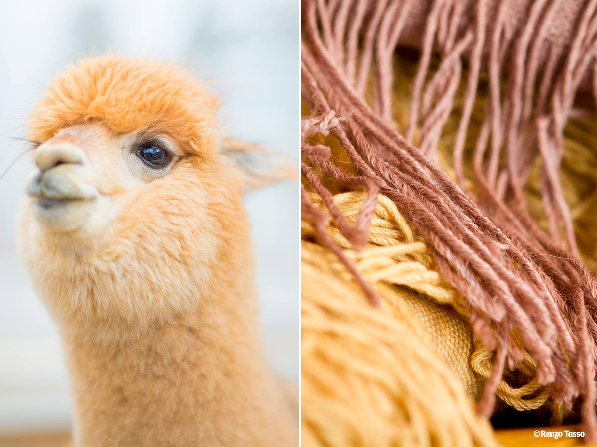
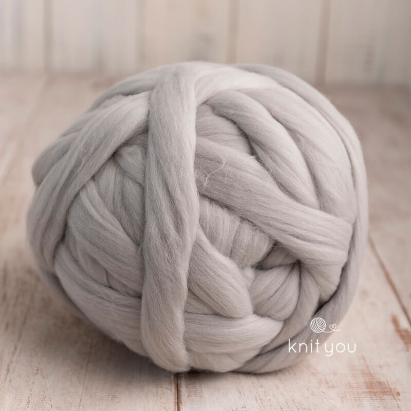
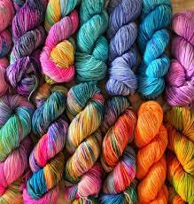

Lana Alpaca
La lana de alpaca es altamente valorada por su suavidad, calidez y durabilidad. Esta fibra natural proviene de la alpaca, un animal originario de Sudamérica y muy valorado en Perú. La lana de alpaca es más ligera y más cálida que la lana de oveja, lo que la convierte en una excelente opción para prendas de vestir de invierno. Además, es hipoalergénica y no contiene lanolina, lo que la hace ideal para personas con piel sensible.

Lana Merino
La lana Merino es una de las lanas más finas y suaves que se pueden encontrar en el mercado. Es muy valorada por su textura sedosa y su capacidad para mantener el calor. Esta lana proviene de la oveja Merino, originaria de España, pero actualmente criada en muchos países alrededor del mundo. La lana Merino es resistente a las arrugas, tiene propiedades antibacterianas y es altamente transpirable

Mezcla
Las mezclas de lanas personalizadas ofrecen la posibilidad de combinar diferentes tipos de lanas y fibras para crear una textura única y personalizada. Con las mezclas, es posible ajustar la suavidad, el grosor y la elasticidad de la lana según las preferencias y necesidades del tejedor o tejedora. Esto permite crear piezas exclusivas con características y propiedades especiales. Además, la mezcla de lanas puede mejorar la durabilidad y resistencia de las prendas, lo que las hace más resistentes al desgaste y al paso del tiempo.